Marginal Benefits 2 — The Disadvantages of Options
Why time decay, timing risk, and cost/liquidity mean an option must earn its place versus simply being long or short the stock.
You can always just be longer or shorter the stock — so an option has to add a marginal benefit or it gets refused. This chapter weighs the three disadvantages of long calls and puts (time decay, timing the trade, dollar cost and liquidity) and closes with the volatility that decides whether an option is cheap or expensive for a reason.
The gist
- The control mechanism: you can always go longer or shorter the stock, so an options trade must deliver a marginal benefit over long/short stock or it should be refused.
- Three disadvantages of a long options strategy vs. stock: time decay, timing the trade, and dollar cost and liquidity constraints.
- Time decay cannot be mitigated on a long option — it is greatest closest to expiration and closest to at-the-money; around 75% of US listed options expire worthless, so being in-the-money is the minority outcome.
- The decay curve over 120 days: least decline in the first 30, slightly greater in the next 30, greater in the next 30, and the MOST RAPID decline in the final 30 days to expiry.
- Timing risk: an option has an expiry, so you must be right on DIRECTION AND TIMING. The 13 Feb → 9 Mar contracts gave only 19 trading days — SLB a $10 move = 15% (~0.78%/day), Macy's a $6 move = 25% (~1.3%/day).
- Right view, wrong timing: 600 sh @ $67 = $40,000 (33% margin $13,200) vs. 6 calls @ $2.25 = $1,350. At $77 on 9 Mar the option makes +$4,650 (244%) vs. stock +$6,000 (45.45%), freeing $11,850 — but at $69 on 9 Mar the $69.25-breakeven call expires worthless while the stock trader makes $1,200, then the stock rallies to $77 on 30 Mar rewarding the stockholder and the option loses 100%.
- Timing risk is the #1 reason ~80% of US retail options traders lose money; the premium should be treated as a stop loss, and if you are unsure of the timing, do the stock trade in smaller size instead.
- Cost/liquidity: bid-offer spreads are much wider in % terms than stock, commissions are higher, and liquidity dries up down the cap chain — only mid ($3-10bn), large ($10-40bn) and mega (>$40bn) caps are tradeable (small <$3bn, micro <$1bn are not).
- Volatility is the ONLY unknown of the six Black-Scholes inputs (spot, strike, time to expiration, dividends, risk-free rate, volatility); higher vol → higher price. Implied (future) vol dominates realized (historical), catalysts drive volatility, and the edge is knowing the catalysts better than the market maker.
The Marginal-Benefit Control: You Can Always Just Trade the Stock
- Video 4 covered the advantages of directional options trading; video 5 assesses the disadvantages — still learning by doing, starting from the most basic strategies.
- Two questions to ask before any options trade; this video answers the second — as a retail trader bound by the mandate, what are the disadvantages, and do they outweigh the advantages?
- The control mechanism is simple: you can always go longer or shorter the stock if you want to.
- So the real question is why deploy capital to an options strategy at all — the answer is always the result of weighing advantages against disadvantages for the specific situation.
The chapter's spine: an option is never the default. Because you can always just be long or short the stock, an option has to add a benefit over that alternative or there is no reason to do it.
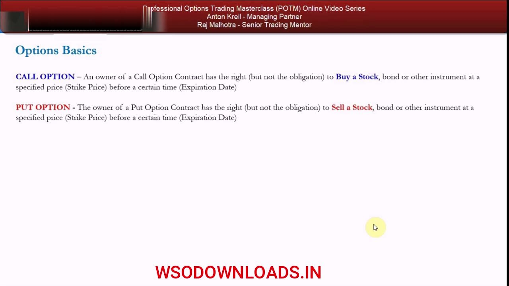
The Two Definitions and the Three Disadvantages
- Call option: the owner has the right but not the obligation to buy a stock at a specified strike price before the expiration date.
- Put option: the owner has the right but not the obligation to sell a stock at a specified strike price before the expiration date.
- Against long or short stock, an options strategy has three areas of disadvantage: time decay, timing the trade, and dollar cost and liquidity constraints.
These three headings organise the whole video. Each is a cost you take on by choosing an option that a plain stock position simply does not carry.
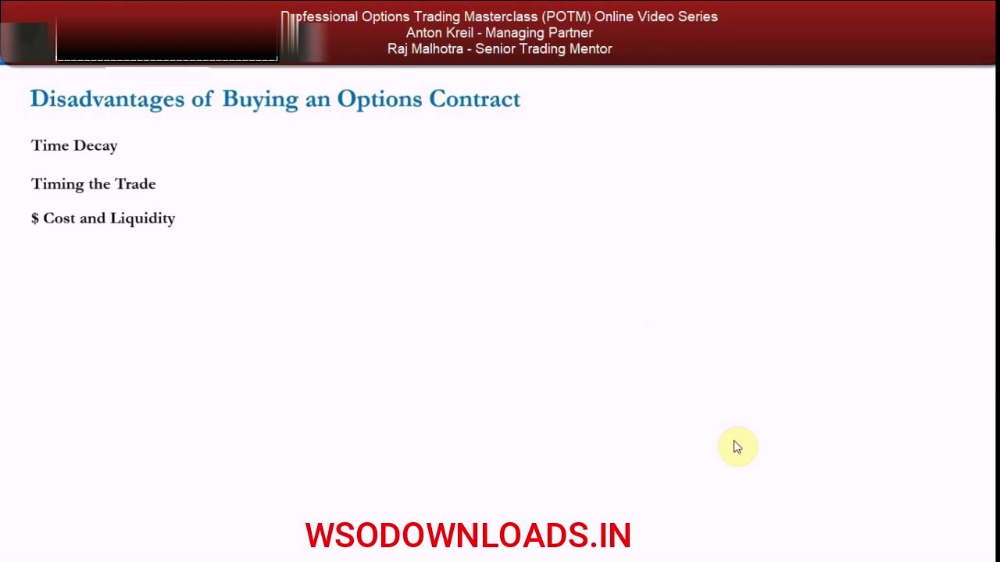
Disadvantage 1 — Time Decay You Cannot Mitigate
- Because you hold a right but not an obligation before a date, all options lose value as you hold them — that is time decay, and there is no way to mitigate this risk.
- Decay is greatest when the option is closer to expiration AND closer to being at-the-money.
- Most US listed options expire worthless because of time decay — and because retail mostly trades out-of-the-money contracts.
- Out-of-the-money for a call = higher strikes than the at-the-money contract; for a put = lower strikes than at-the-money.
- Recall SLB at ~$67: the $67 strike was nearest the money, so the March contract bought there was an at-the-money contract.
Time decay is the tax you pay for holding a wasting asset. Unlike stock, an option bleeds value with every day held, and that bleed accelerates toward expiry and at-the-money.
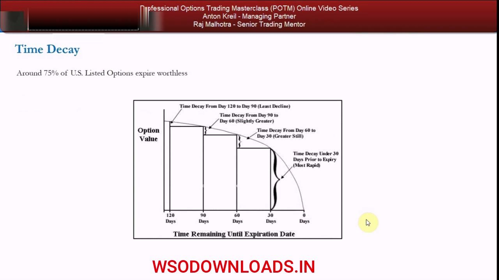
The Decay Curve — 120 / 90 / 60 / 30 / 0 Days
- Chart: Option Value on the left axis, Time Remaining until expiration along the bottom, shown for a long-dated 120-day option.
- First 30 days: the least decline. Next 30 days: a slightly greater decline. Next 30 days: a greater loss of value. Final 30 days to expiry: the MOST RAPID decline.
- Because of this shape, around 75% of US listed options expire worthless.
- If the majority expire worthless, the minority expire with value (in-the-money) — so being in-the-money is a minority situation when going long options.
- That begs the question: why not just sell naked short calls and puts all day? Because that does not fit the retail trader mandate, and even if it did, the marginal benefits do not exist — the disadvantages far outweigh the advantages (covered in later videos).
The curve is convex: value falls slowly at first, then collapses in the last 30 days. That is why three-quarters of listed options expire worthless — and why naked shorting, tempting as it looks, is a separate trap for a retail mandate.
Disadvantage 2 — Timing Risk: Right Direction AND Right Time
- Buying a call or put adds timing risk versus being long or short stock — with stock you don't have to be right by a certain time.
- Recall: on 13 Feb 2018 the SLB calls and Macy's puts chosen expired on 9 Mar — only 19 trading days to be right, or lose 100% of the premium.
- SLB: a $10 move up from $67 is a 15% move, needing the stock to rally on average ~0.78% (78 basis points) per trading day, every day.
- Macy's: a $6 move down from $24 is a 25% move, needing the stock to fall on average ~1.3% per trading day, every day.
- These are big moves to expect inside 19 trading days — you can be right on your view yet still lose money on the option.
Timing risk is the extra risk an option loads onto a correct view. The 19-trading-day window converts a directional call into a demand for a specific pace of move — a pace the stock does not have to honour.
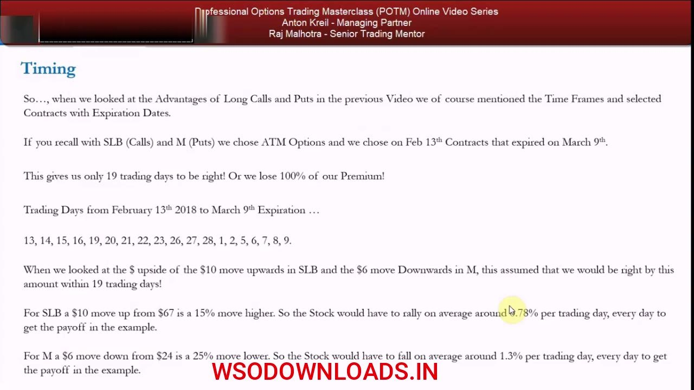
The SLB Payoff — When the Trade Works
- Stock: buy $40,000 of SLB (597 shares, which doesn't hit the 100 multiplier; the example uses 600 shares) at 33% margin = $13,200 tied up.
- Option: 6 × 9 Mar $67-strike calls at $2.25 each = $1,350, giving $40,200 of exposure.
- If the stock closes at $77 on 9 Mar: option P&L $4,650 = 244% ROI, vs. stock +$6,000 = 45.45% ROI (15% dollar move).
- Marginal benefit: $11,850 of margin is freed to earn interest, put on another trade, or buy more SLB / more calls — even doubling the call position leaves $10,500 unused.
On the winning path the option looks unbeatable: a fraction of the capital, a far higher ROI, and freed margin. This is exactly the upside video 4 sold — and precisely why the downside needs equal weight.
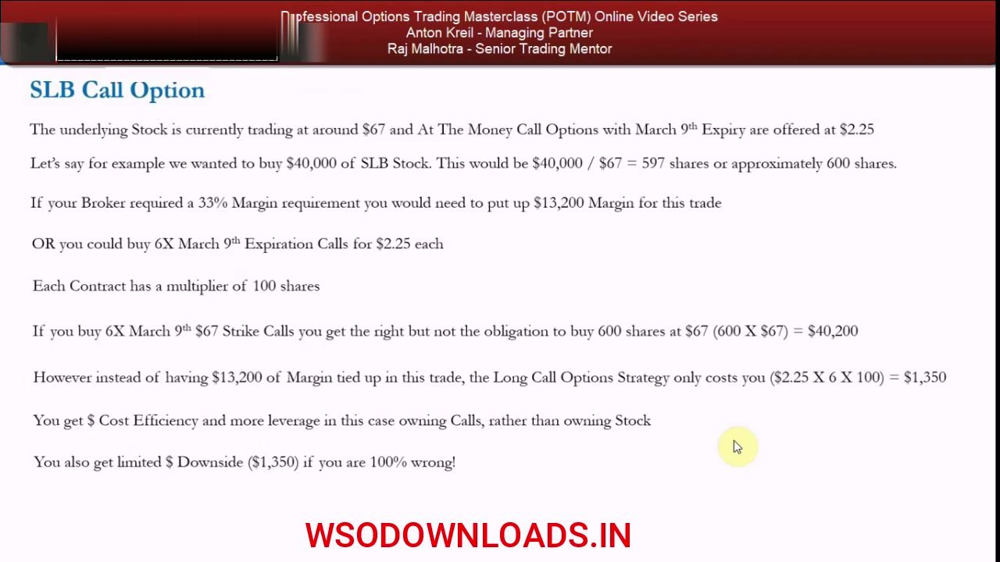
Right View, Wrong Timing — The Option Loses 100%
- Same setup: stock trader long 600 sh @ $67 ($40,000 exposure, 33% margin, $13,200 tied up); options trader 6 × $67-strike 9 Mar calls @ $2.25 = $1,350.
- If the stock closes at $69 on 9 Mar: the stock trader makes $2 × 600 = $1,200; the call expires worthless (breakeven $69.25 = $67 + $2.25 paid) — a 100% loss of premium.
- The stock then rallies to $77 by 30 Mar: the stock trader makes $10 × 600 = $6,000 (45.5% ROI); the options trader lost the $1,350 and 'probably lost their mind'.
- The view was right, the timing was wrong — you don't just cap downside at the premium, you ADD timing risk.
This is the mirror image of the previous slide, and the lesson of the whole video. A correct thesis that arrives three weeks late pays the stockholder and wipes out the option holder.
Why Rolling Doesn't Save You
- Rolling = when a contract expires, buying the next strike and/or a longer expiration to keep the position on.
- But you can just repeat the loss: at $69 on 9 Mar, roll into a $69-strike 23 Mar call for another ~$1,350; the stock drifts to $71 then jumps to $77 on 27 Mar.
- The long-stock owner keeps making money while you keep losing 100% of premium every time you roll.
- Key point: on every options trade you must weigh the marginal benefit (leverage, potential return) against the timing — how confident you are on the timing is the number-one risk.
Rolling feels like persistence but it is just re-buying the same timing bet. Each roll is another full premium at risk against a stock position that never had to be timed at all.
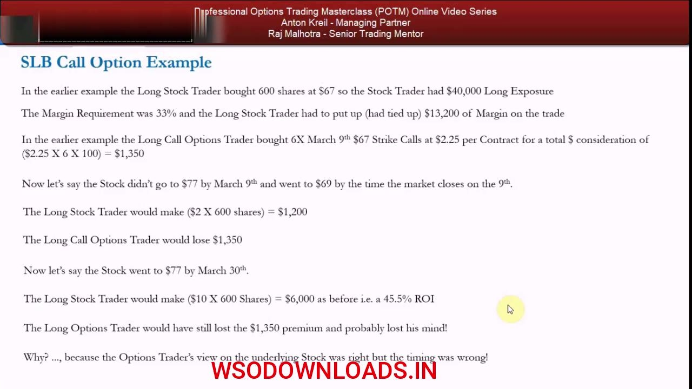
Timing Is the #1 Reason Retail Loses — Treat Premium as a Stop Loss
- Timing risk is the number-one reason ~80% of US retail options traders lose money — they use options as a proxy for a stock view and don't appreciate the timing they take on.
- Usually this is just a wish for leverage because they lack the margin for the stock size they want; but a stock does not move more or less because you chose leverage — the stock does not care.
- If unsure of timing, do the stock trade in smaller size within a margin requirement that fits your risk profile — you give up some upside but keep your sanity.
- Only buy a call or put versus stock when there is a marginal dollar-capital benefit (not merely a shortage of margin), and only if you can afford to lose 100% of the premium — treat the premium as a stop loss.
- You must also be confident the reward exists for BOTH risks taken — the premium risk and the timing risk — i.e. get paid for the extra risk over the plain stock position.
The practical rule falls out of the timing disadvantage: the premium is a stop loss you accept up front, and the option is justified only when the incremental reward clearly pays for the incremental timing risk.
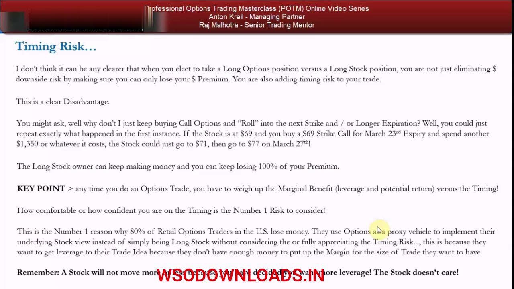
The Four Considerations on Every Trade
- There is no rulebook and no one-size-fits-all solution — only best practices and factors that apply across all long-options situations.
- For every options trade, consider four things: (1) usefulness to the retail trader mandate; (2) break-evens and payoffs; (3) risk-reward; (4) volatility.
- Break-evens/payoffs, risk-reward and volatility together determine whether a trade is worth considering, and so categorise each strategy's usefulness to the mandate.
- Recall video 3: 17 useful strategies were filtered from 53; the long straddle and long strangle were placed in the usefulness PDF for later. All 17 are covered in the POTM series, with when marginal benefits exist to deploy them.
Rather than rules, Anton gives a checklist. These four lenses are applied to every strategy the series later teaches, always against the baseline of simply owning or shorting the stock.
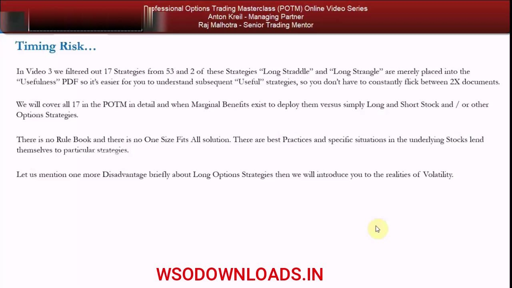
Disadvantage 3 — Dollar Cost and Liquidity
- Video 4 counted dollar-cost efficiency as an advantage: on a one-for-one basis an option is lower priced than the stock, and per unit move of the stock the option's percentage moves by more.
- But in the US listed options market the bid-offer spread is much wider in percentage terms than in the stock — look back at the SLB and Macy's chains versus the stocks themselves.
- Commissions are higher in options than in stocks.
- Many stocks have little or no liquidity — smaller-cap names have worse stock liquidity than large/mega caps, and it is no different in listed options; strike intervals can be very wide.
The same cost efficiency that helped in video 4 flips into a disadvantage: wide spreads, higher commissions, thin liquidity and coarse strikes can make a nominally cheap option expensive to actually trade.
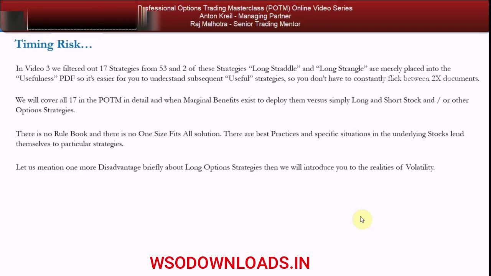
The Market-Cap Tiers and the Tradeable Space
- Mega cap: generally over $40 billion market cap. Large cap: $10 to $40 billion. Mid cap: generally $3 to $10 billion.
- Small cap: lower than $3 billion. Micro cap: lower than $1 billion.
- The only real space to trade US listed options is mid cap, large cap and mega cap.
- Market cap, shares outstanding and average daily volume literally determine listed-options liquidity — going from mega → large → mid, liquidity dries up.
- If wide spreads, wide strike intervals, thin liquidity and high commissions push break-evens too far and the risk-reward looks poor, the trade should be refused — often the option you want simply won't be available at a sensible price.
Liquidity is a function of size. Below mid cap the listed-options market effectively isn't tradeable, and even within the tradeable tiers the cost of entry can push break-evens out of reach — so the trade gets refused.
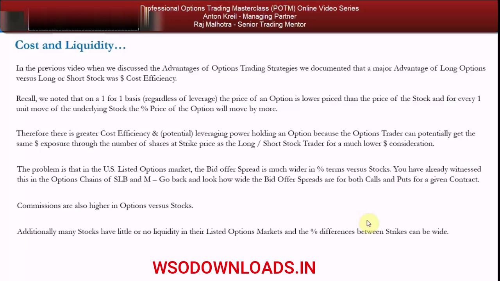
Volatility — The Six Black-Scholes Inputs
- Market makers make markets using options pricing models — all are iterations or refinements of the basic Black & Scholes formula, which prices calls and puts.
- Six key inputs: (1) underlying stock price (spot), (2) strike price, (3) time to expiration (days to maturity), (4) dividends, (5) the risk-free rate, (6) volatility.
- Volatility is expressed as an annualized percentage and is the ONLY unknown — the other five inputs are all known.
- Higher volatility → higher options price for a given contract; lower volatility → lower price.
- Assume market makers are not stupid: they price volatility so the option reflects all available information — so buying an option is a statement that you know something about direction and future volatility.
Everything about an option's price is knowable except volatility. That single unknown is where any edge lives — and where the market maker has already embedded their best estimate.
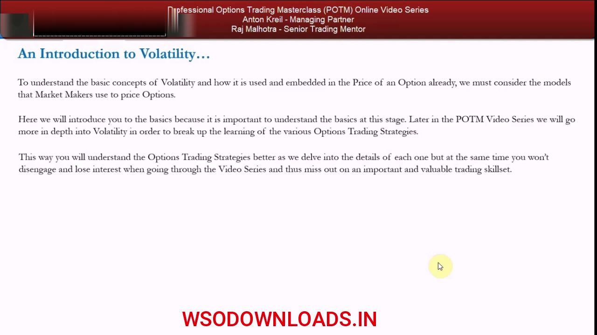
Realized vs. Implied Vol, and Catalysts
- Realized (historical) volatility measures a stock's past movements; implied volatility measures its future movements — so implied vol matters more, and it is what market makers use to calculate the premium.
- Knowing exactly how realized and implied vol are calculated matters for a market maker, but for the retail mandate the key is understanding WHY volatility goes up and down — because of catalysts.
- Before any strategy, ask: what is the catalyst? Catalysts drive volatility, and volatility is the only unknown in pricing an option.
- No major news expected → volatility priced low → options priced low; a known upcoming catalyst → market makers raise expected volatility and lift options prices into the announcement.
- The way to beat market makers is not to nickel-and-dime their price — it is to know the fundamentals and forecast catalysts better than they do.
Implied vol is the market's forward bet on movement, driven by catalysts. The retail edge is not arguing over a mispriced tick but genuinely knowing the catalysts the market maker has under- or over-estimated.
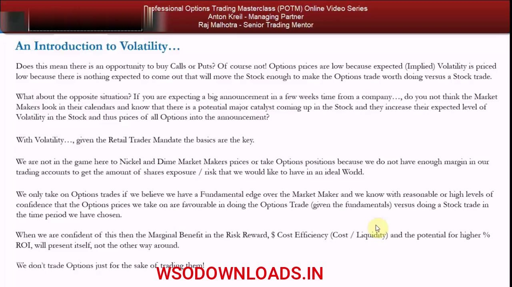
Cheap for a Reason, Expensive for a Reason
- If expected volatility is low, options are 'cheap' — but cheap for a reason (few or no catalysts), so you probably won't make money; assume that.
- If expected volatility is high, options are 'expensive' — but expensive for a good reason (catalysts expected), and you're more likely to make money.
- Don't assume the market maker is wrong: assess the price and the market's expected volatility against your own volatility expectation and your own catalyst forecast.
- Remember you must be right by a certain date — with no catalyst, low prices reflect low odds of being right in time.
- It is all a game of opportunity cost: you can always be long or short the stock and not do the options trade — the classic warning is the SLB call that expired on 9 Mar before the stock rallied to $77.
A cheap option is usually cheap because nothing is expected to happen; an expensive one is expensive because something is. The trade only makes sense when your catalyst view justifies paying — or refusing to pay — that priced-in volatility.
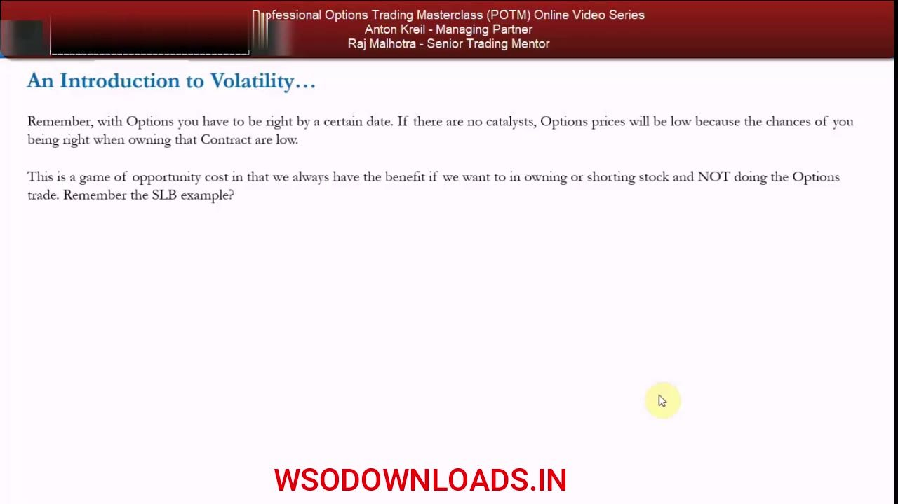
Glossary
- Marginal benefitThe extra advantage an options position must deliver over simply being long or short the stock; without it, the option should be refused because you can always just trade the stock.
- Time decayThe loss of an option's value as it is held; on a long option it cannot be mitigated, and it is greatest closest to expiration and closest to at-the-money.
- Out-of-the-money (OTM)For a call, strikes higher than the at-the-money contract; for a put, strikes lower. Retail mostly buys OTM as a stock proxy, pushing break-evens away and lowering the odds of profit.
- At-the-money (ATM)The strike nearest the stock's current price — e.g. the $67 strike when SLB traded ~$67.
- Timing riskThe extra risk added by an option's expiry: you must be right on both direction AND timing within the contract's window, or lose 100% of premium.
- RollWhen a contract expires, buying the next strike and/or a longer expiration to keep the position on — which can simply repeat the 100% premium loss.
- Break-evenThe stock price at which an option position starts to profit; for the SLB $67 call at $2.25 premium it is $69.25 ($67 + $2.25).
- Market-cap tiersMega >$40bn, large $10-40bn, mid $3-10bn, small <$3bn, micro <$1bn. Only mid, large and mega caps have enough liquidity to trade listed options.
- Black-Scholes inputsThe six inputs to the option pricing formula: spot price, strike, time to expiration, dividends, risk-free rate and volatility — of which only volatility is unknown.
- Realized volatilityA measure of a stock's historical (past) price movements.
- Implied volatilityA measure of a stock's expected future movements, used by market makers to price the premium; the dominant volatility measure and the only unknown pricing input.
- CatalystAn expected event (e.g. a news announcement) that drives volatility up or down and thus the price of options; forecasting catalysts better than the market maker is the retail edge.